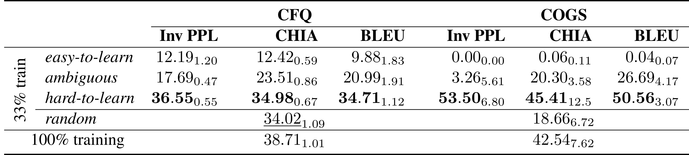
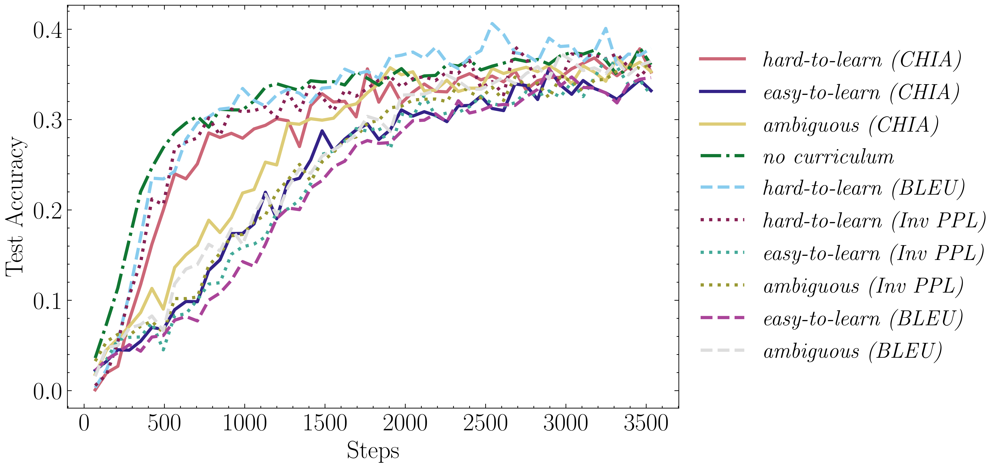
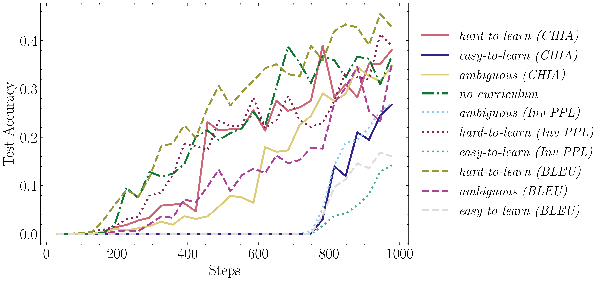
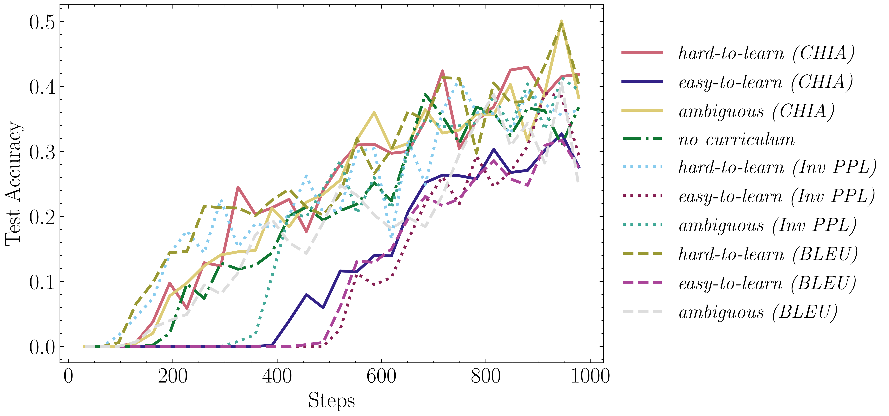
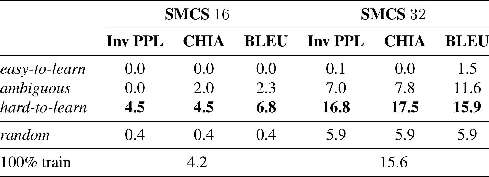
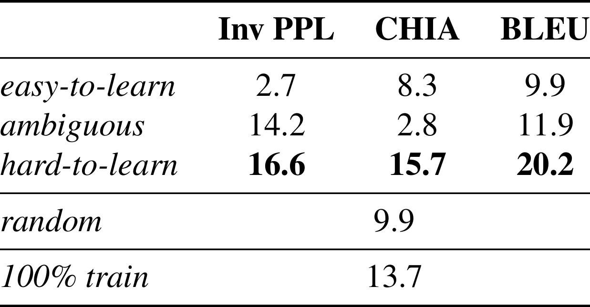
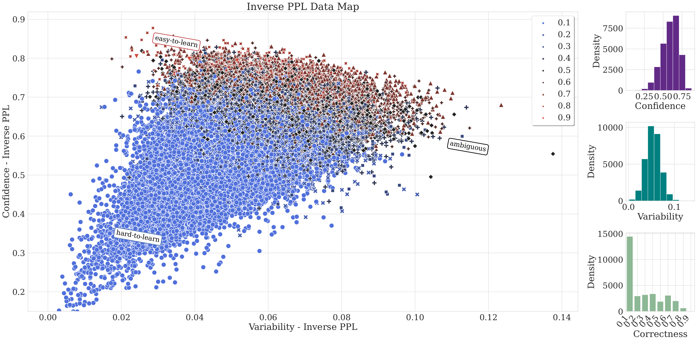
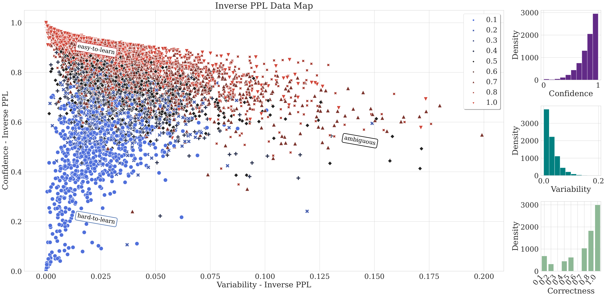

Harnessing Dataset Cartography for Improved
|
|
|
|
|
AbstractNeural networks have revolutionized language modeling and excelled in various downstream tasks. However, the extent to which these models achieve compositional generalization comparable to human cognitive abilities remains a topic of debate. While existing approaches in the field have mainly focused on novel architectures and alternative learning paradigms, we introduce a pioneering method harnessing the power of dataset cartography [1]. By strategically identifying a subset of compositional generalization data using this approach, we achieve a remarkable improvement in model accuracy, yielding enhancements of up to 10% on CFQ and COGS datasets. Notably, our technique incorporates dataset cartography as a curriculum learning criterion, eliminating the need for hyperparameter tuning while consistently achieving superior performance. Our findings highlight the untapped potential of dataset cartography in unleashing the full capabilities of compositional generalization within Transformer models. [1] Dataset Cartography: Mapping and Diagnosing Datasets with Training Dynamics (Swayamdipta et al., EMNLP 2020) |
Method Overview[1] propose dataset cartography, a visualization tool named data maps with two dimensions, confidence and variability, which characterizes the informativeness of training instances of a classification dataset with respect to a model. In this study, we extended dataset cartography idea into the text generation setting. Furthermore, we addressed the lack of compositional generalization capabilities of Transformers by demonstrating that selecting a subset of the training dataset using dataset cartography and training models on this subset can enhance model accuracy by up to 10%. We also showed that our setup can generalize to different model architectures and natural datasets. Moreover, we achieved improved performance by employing a dataset cartography-based curriculum learning without the need for hyperparameter tuning. Our findings: |
{kind=link}
33% Subset Results
The impact of subset training (Part 1). Our experiment results reveal superior generalization performance when models are trained on hard-to-learn samples compared to ambiguous or random subsets. Notably, these subsets consistently outperform the entire dataset, especially evident in the COGS dataset. Conversely, training on easy-to-learn samples results in poor generalization. Noteworthy is the efficacy of Inverse Perplexity as a superior measure for selecting challenging samples, as demonstrated by the averaged accuracy results over 3 runs. The best and second-best subsets are highlighted in bold and underlined, respectively. |
|||||||||||
50% Subset ResultsThe impact of subset training (Part 2). The table outlines accuracy results for CFQ and COGS datasets, comparing models trained on 50% subsets of the training data to using the full dataset. The hard-to-learn subset, particularly with the Inv PPL measure, consistently outperforms other subsets, showcasing over 4% and 10% accuracy improvement compared to 100% training in CFQ and COGS, respectively. While subset combinations exhibit promise with CHIA and BLEU measures, the hard-to-learn (Inv PPL) subset consistently performs exceptionally well, often surpassing other subset combinations. The findings underscore the robustness of the hard-to-learn and particularly hard-to-learn (Inv PPL) subset across both datasets. |
|||||||||||
3. Curriculum Learning Results (CFQ dataset)Accuracy plots on CFQ for the CL strategy by [2] Accuracy plots on CFQ for the CL strategy by [3]
Results for both frameworks. These figures evaluate the performance of different curriculum learning (CL)
strategies on the CFQ dataset. The results show that no single curriculum consistently outperforms others.
Surprisingly, initiating training with hard-to-learn samples yields superior performance compared to
easy-to-learn samples, contrary to common CL expectations. This observation is consistent across both CL frameworks evaluated in the study.
|
|||||||||||
4. Curriculum Learning Results (COGS dataset)Accuracy plots on COGS for the CL strategy by [2]
Accuracy plots on COGS for the CL strategy by [3]
Results for both frameworks. Figures 5 and 6 provide further insights into the impact of dataset cartography on CL for compositional generalization. The hard-to-learn (BLEU) configuration emerges as the most effective configuration, while the easy-to-learn configurations demonstrate the poorest final performance across both CL frameworks. These findings suggest that starting the curriculum with hard-to-learn examples is more beneficial for improving generalization capabilities. |
|||||||||||
5. Preliminary Experiments w/Natural Datasets
Additional results on SmCalFlow-CS Simple (SMCS) 50% subset experiments. The SMCS 16 and 32 splits follow a similar trend to the CFQ and COGS datasets, with hard-to-learn subsets consistently outperforming the original dataset and easy-to-learn subsets performing the worst. Interestingly, the ranking of metrics is more fluid in the SMCS results, with hard-to-learn (Inv PPL) no longer the clear frontrunner. Instead, hard-to-learn (BLEU) and hard-to-learn (CHIA) are the best performing subsets in SMCS 16 and 32 respectively. |
|||||||||||
6. Preliminary Experiments w/Other Architectures
Additional results on COGS 50% subset Bi-LSTM experiments. Despite the overall lower performance, the Bi-LSTM experiments support the primary findings of the paper: training models on hard-to-learn subsets consistently outperforms training on the full dataset. While the maximum absolute performance increase between hard-to-learn subsets and full training is slightly lower for the Bi-LSTM model than for the Transformer model, the maximum relative performance increase is actually higher. This shows that dataset cartography can improve generalization performance in architectures other than Transformer. |
|||||||||||
7. Sample Cartography MapsCFQ - Inverse PPL Cartography Map
COGS - Inverse PPL Cartography Map
|
BibTeX
To be added..
Contact
For any questions, please contact Osman Batur İnce at osmanbaturince@outlook.com.